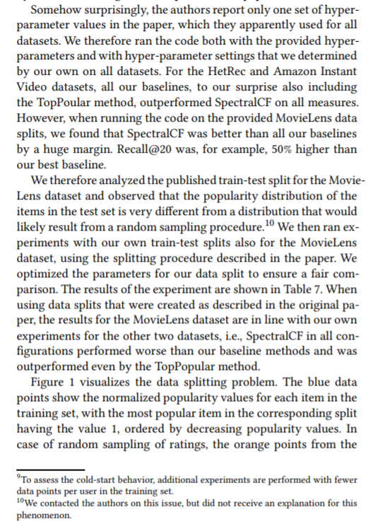
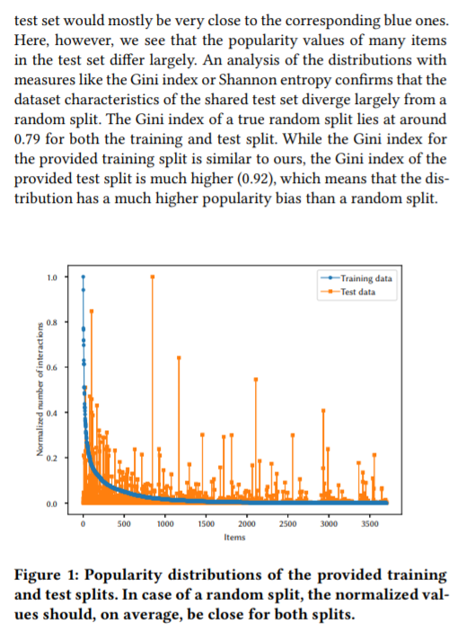

}}index_files/anchor-sections/anchor-sections.css" rel="stylesheet" />
In the paper Are We Really Making Much Progress? A Worrying Analysis of Recent Neural Recommendation Approaches, authors Dacrema, Cremonesi, and Jannach evaluate various neural networks which were designed for recommendation systems and proposed in prominent machine learning journals. A recommendation system is an information filtering system which uses user history (e.g. purchases, page views, clicks, thumbs up/down, etc) to provide personalized item recommendations to users.
The authors point out a few mistakes or “questionable techniques” used in the research they were attempting to reproduce and evaluate. The figure in the article snippet below points out that, for a particular model they were evaluating, the popularity distribution of items assigned to the test and train data splits did not seem to be the same. Interestingly, this affected the reported results and potentially the claim that the proposed model was a state-of-the-art! See the article for more details.


Snippet of the 2020 paper, “Are We Really Making Much Progress? A Worrying Analysis of Recent Neural Recommendation Approaches”, by Dacrema, Cremonesi, and Jannach
I thought this was a nice example comparing the distribution of two samples (i.e. comparing the item popularity of the test set versus the training set). Why is this important? Well, because we would like to train our model using data similar that which the model will score in the future. The test set is used to tell us how good (or bad) our model performs on data that it has not seen before.
The authors mentioned that they used the Gini index to evaluate the distribution of the test set. One might also wonder if a hypothesis test could be used to consider the evidence for or against the training and test sets having the same underlying distribution. Let’s look at both approaches.
The data
The train and test data mentioned in the article above are available at github.com/lzheng21/SpectralCF.
For convenience I also saved them as R dataframes in the data directory of the GitHub repo associated with this analysis. Using R, the data can be loaded as follows.
load("data/train_test.RData")
Let’s take a peak at the training set. The data is composed of two columns containing user id’s and item id’s. It comes from MovieLens, which provides data about user movie watching history. The existence of user-item pair in the data means that the user interacted with the item (in this case the user watched the movie). A data scientist can use this information as “implicit feedback”, inferring that the user “liked” the item.
| user |
item |
| 1702 |
1497 |
| 786 |
132 |
| 1892 |
279 |
| 4333 |
317 |
| 4962 |
220 |
| Min User ID |
Max User ID |
User Count |
Min Item ID |
Max Item ID |
Item Count |
| 0 |
6013 |
6014 |
0 |
3704 |
3068 |
Next, count the number of user interactions per item in each of the train and test datasets. Only the first 6 rows of the result are shown in the table below.
item_frequency <-
full_join(
train %>% group_by(item) %>% count() %>% ungroup(),
test %>% group_by(item) %>% count() %>% ungroup(),
by = "item"
) %>%
rename(count_train = n.x, count_test = n.y) %>%
replace_na(list(count_train = 0, count_test = 0))
| item |
Train Count |
Test Count |
| 0 |
932 |
5 |
| 1 |
77 |
0 |
| 2 |
259 |
1 |
| 3 |
308 |
2 |
| 4 |
309 |
85 |
| 5 |
1186 |
0 |
We can use this information to re-create the plot from the paper:
View code
item_frequency %>%
mutate(train = count_train/max(count_train), test = count_test/max(count_test)) %>%
arrange(desc(count_train)) %>%
mutate(train_rank = row_number()) %>%
select(-count_train, -count_test) %>%
pivot_longer(-c(item, train_rank), names_to = "data", values_to = "num_interactions") %>%
ggplot(aes(train_rank, num_interactions, group = data, color = data)) +
geom_line() +
geom_point() +
xlab("Item Index") +
ylab("Normalized number of interactions")
I think that looks pretty close to the image in the article! As the authors point out, the items are sorted by their popularity in the training set (in descending order along the horizontal axis). The value of the (normalized) test popularity is also plotted for each item. We can see that the two distributions do not look similar. To be a bit more rigorous we can consider a few statistical procedures.
Gini Index
The article authors used the Gini index to evaluate the distribution of the provided test set. Let’s try it to see how it works. We’ll use the ineq R package.
#install.packages("ineq")
library(ineq)
The Gini index is a measure of inequality ranging from 0 (equality) to 1 (no equality). For example, if there was no popularity bias in the dataset (i.e. all items had the same number of interactions), then the Gini index would be 0. That’s not the case since some movies were watched more than others. Let’s look at the Gini index for the provided train and test sets.
# Gini index for provided test set
gini_provided_test <-
item_frequency %>%
select(-item, -count_train) %>%
as.matrix() %>%
ineq(type="Gini")
# Gini index for provided train set
gini_provided_train <-
item_frequency %>%
select(-item, -count_test) %>%
as.matrix() %>%
ineq(type="Gini")
gini_provided_train
## [1] 0.7636983
gini_provided_test
## [1] 0.9044503
The provided test set has a much higher Gini index than the train dataset (0.9 compared to 0.76). Is such a difference expected for a random train/test split? Keep reading.
Resampling the test data
Let’s try sampling our own test set to see how that affects the Gini index. We’ll start with the full dataset, sampling at the same rate as the provided train/test split and stratifying by user.
# Determine percentage of data that should be sampled for test
(pct_test <- nrow(test)/(nrow(test) + nrow(train)))
## [1] 0.2081349
# Sample test set (stratify by user)
data_full <- bind_rows(train,test)
test_new <-
data_full %>%
group_by(user) %>%
slice_sample(prop = pct_test) %>%
ungroup()
# Put remaining data in train:
train_new <- anti_join(data_full, test_new)
# Recreate our interaction counts for each item:
item_frequency_new <-
full_join(
train_new %>% group_by(item) %>% count() %>% ungroup(),
test_new %>% group_by(item) %>% count() %>% ungroup(),
by = "item"
) %>%
rename(count_train = n.x, count_test = n.y) %>%
replace_na(list(count_train = 0, count_test = 0))
Let’s visualize the newly sampled train and test data, which we can compare to Figure 1.
View code
item_frequency_new %>%
mutate(train = count_train/max(count_train), test = count_test/max(count_test)) %>%
arrange(desc(count_train)) %>%
mutate(train_rank = row_number()) %>%
select(-count_train, -count_test) %>%
pivot_longer(-c(item, train_rank), names_to = "data", values_to = "num_interactions") %>%
ggplot(aes(train_rank, num_interactions, group = data, color = data)) +
geom_line() +
geom_point() +
xlab("Items") +
ylab("Normalized number of interactions")
The test and train popularity distributions look much closer!
Gini Index Revisited
Now we can revisit the Gini index for the re-sampled train/test split.
# Gini index for our sampled test set:
gini_ours_test <-
item_frequency_new %>%
select(-item, -count_train) %>%
as.matrix() %>%
ineq(type="Gini")
gini_ours_test
## [1] 0.7548327
# Gini index for our sampled train set:
gini_ours_train <-
item_frequency_new %>%
select(-item, -count_test) %>%
as.matrix() %>%
ineq(type="Gini")
gini_ours_train
## [1] 0.7509395
We see that our sampled test set has a Gini index (0.75) that is much closer to that of our sampled training dataset (0.75).
But, how much difference can we expect between the two sampled datasets that are representative of the same distribution? Is the observed difference in the provided datasets likely due to random sampling or some other reason? Let’s take a look at a couple of hypothesis tests.
Hypothesis Testing
\(\chi^2\) Test of Homogeneity
Let’s suppose that our null hypothesis is that the train and test sets have the same underlying distribution (vs the alternative hypothesis that they do not). We can consider the data as a 2 by 3232 contingency table (since there are 3232 items).
One might naively choose to run a \(\chi^2\) test to test this hypothesis.
The \(\chi^2\) test is most appropriate when the data is not too sparse. Recall that one of the rule-of-thumb assumptions for the \(\chi^2\) test is that no more than 20% of the expected cells counts are less than 5. (Sometimes a slightly different rule of thumb is used: that all cell counts have an expected value of at least 5.) Let’s check to see if this assumption is satisfied.
# Check to see percentage of expected cell values are < 5
# Compute the expected values
n_train <- sum(item_frequency$count_train)
n_test <- sum(item_frequency$count_test)
n <- n_train + n_test
item_frequency %<>%
mutate(p = (count_train + count_test)/n,
e_test = p * n_test,
e_train = p * n_train)
# Check what percentage of the expected values are less than 5
(pct_expected_small <- sum((item_frequency$e_test < 5) + (item_frequency$e_test < 5))/(2*nrow(item_frequency)))
## [1] 0.5792079
We see here that 57.9% of the expected values are very small (less than 5), meaning that the assumption in question is not satisfied.
Let’s look at an alternative method.
Fisher’s Exact Test
Again consider a 2 by 3232 contingency table composed of the test and train vectors. We can utilize a test that is acceptable for small sample sizes: Fisher’s exact test can be used to test the null hypothesis that the two factors of a 2-dimensional contingency table are independent (no relationship) vs the alternative that they are not.
Consider first the hypothesis test for the original train/test data:
item_frequency %>%
select(count_train, count_test) %>%
fisher.test(simulate.p.value = TRUE)
##
## Fisher's Exact Test for Count Data with simulated p-value (based on
## 2000 replicates)
##
## data: .
## p-value = 0.0004998
## alternative hypothesis: two.sided
The p-value is very small indicating that there is sufficient evidence that the movie popularity distribution is dependent on the dataset (test or train).
Now consider the test for our re-sampled train/test data:
item_frequency_new %>%
select(count_train, count_test) %>%
fisher.test(simulate.p.value = TRUE)
##
## Fisher's Exact Test for Count Data with simulated p-value (based on
## 2000 replicates)
##
## data: .
## p-value = 0.6112
## alternative hypothesis: two.sided
In this case the p-value is large meaning that we fail to reject the hypothesis that the movie popularity distribution is independent of the dataset. In other words, we see a similar pattern in both the test and train data sets that we sampled. These results align with our expectation.
Closing Thoughts
Using a few methods (vizualization, Gini index, and hypothesis testing) we observed that the provided test data set did not follow the same popularity distribution as the training set.
Should we always expect our train and test data to have the same distribution? What if the test/train split were based on time (i.e. we use earlier data to train the model and use the most recent data to test). This might be an interesting experiment for a future blog post or a class exercise.
If you would like to provide feedback on this blog post, you can contact me via Twitter (DM me @DrAmandaRP). Thanks for reading!